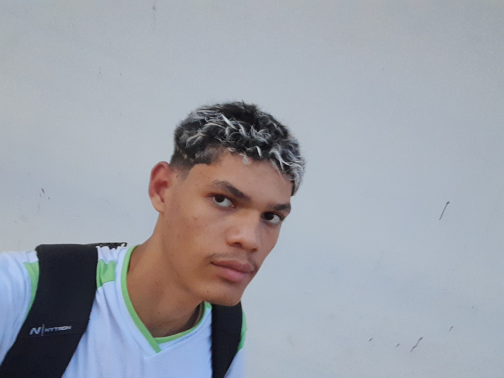

Minha História
Sou apaixonado desde criança por tecnologia. Tive meu primeiro contato com programação no 9º ano, desenvolvendo mods de Minecraft em Java. Professores da minha antiga escola reconheceram meu potencial e me recomendaram ingressar no IFRO, onde continuo estudando até hoje, no 3º ano do curso técnico em informática no campus Ariquemes.
Desde então, desenvolvi um amor por programação, principalmente mobile com Flutter, mas também estudo desenvolvimento web. Tenho domínio em Dart, Flutter, Java, Python, JavaScript, React, C++, C# e um pouco de Lua, com experiência até em desenvolvimento de jogos para Roblox.
Minha Imagem
Hobbies e Interesses
- Programação mobile com Flutter
- Desenvolvimento de jogos (Roblox, Unity)
- Estudo de linguagens de programação
- Tecnologia e inovações
- Explorar frameworks novos
- Games e cultura geek
Conhecimentos Técnicos
- Linguagens: Dart, Java, Python, JavaScript, C++, C#, Lua
- Frameworks: Flutter, React
- Áreas: Desenvolvimento Mobile, Desenvolvimento Web, Criação de Mods, Jogos